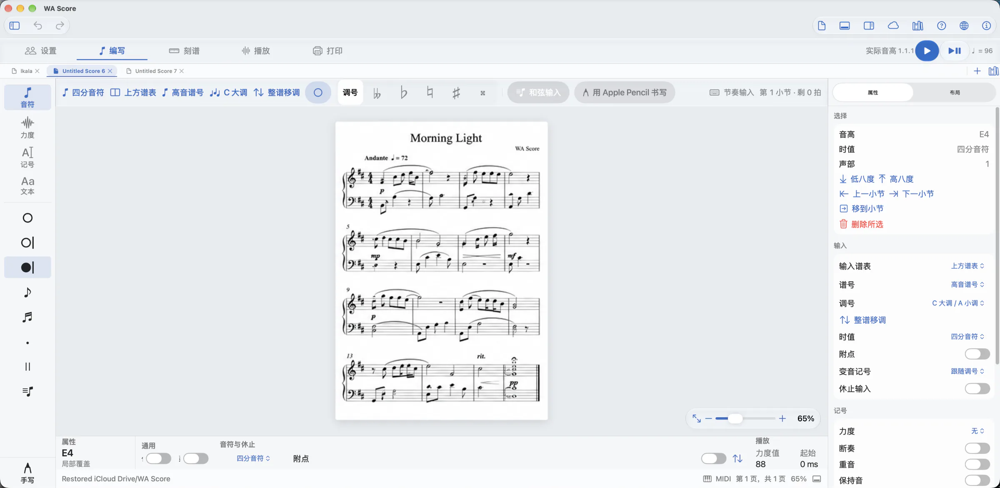

键盘与 MIDI
Keyboard & MIDI
用快捷键或 MIDI 键盘逐步输入音符与和弦。
Step-enter notes and chords with shortcuts or a MIDI keyboard.
导入音频，在设备上生成钢琴谱草稿；或在 iPad 上用 Apple Pencil 写下音符。接着编辑、试听，把灵感变成自己的作品。
Turn audio into a piano score draft on your device. Or write notes with Apple Pencil on iPad. Then edit, listen, and make the music your own.

音频留在设备内Your audio stays local离线处理，无需上传录音。Offline processing. No audio upload.
保留原稿，另建新谱A separate new document原有乐谱保留，改编结果自由修改。Keep your existing score and refine the new draft.
从试听到多页导出Listen, edit, and export钢琴播放 · MusicXML · 多页 PDFPiano playback · MusicXML · Multi-page PDF
音频转谱预览功能 · 支持 WAV、MP3、M4A、AIFF，最长 5 分钟。结果为改编草稿，请核对节奏、旋律与手部跳跃。
Audio-to-score preview · WAV, MP3, M4A, AIFF, up to 5 minutes. Results are arrangement drafts; review rhythm, melody, and hand jumps.
Demo: Vibe Ace — Kevin MacLeod · CC BY 3.0 · Piano arrangement generated by WA Score.
APPLE PENCIL · 在 iPad 上手写音符
APPLE PENCIL · HANDWRITE NOTES ON IPAD
在五线谱上用 Apple Pencil 书写，识别后得到能够选择、移调、改变时值并继续排版的音符，而不是一张不可编辑的图片。
Write on the staff with Apple Pencil, recognize the ink, then keep editing the resulting notes—select, transpose, change duration, and engrave.
Pencil 手写转换目前支持基础音符输入，识别后请核对；复杂记号与整页手写识别仍在完善。Apple Pencil 需兼容的 iPad。
Pencil conversion currently supports basic note entry and needs review. Complex symbols and full-page handwriting recognition are still in development. Apple Pencil requires a compatible iPad.
键盘、MIDI、触控与手写共享同一套音乐语义。换一种设备，不必换一种工作方法。
Keyboard, MIDI, touch, and handwriting share the same musical model. Change devices without changing how your score works.
用快捷键或 MIDI 键盘逐步输入音符与和弦。
Step-enter notes and chords with shortcuts or a MIDI keyboard.
选择音符和乐句，改变时值、音高、力度与演奏记号。
Select notes and phrases, then change duration, pitch, dynamics, and articulations.
谱面与试听从同一组音乐事件生成，编辑结果始终一致。
Notation and playback derive from the same musical events, so edits stay in sync.
导入和导出 MusicXML，或输出清晰的矢量 PDF。
Import and export MusicXML, or produce a crisp vector PDF.
无需账户，没有广告。乐谱可以保存在设备本地，也可以由你选择同步到自己的 iCloud Drive。
No account and no ads. Keep scores on your device, or choose to sync them through your own iCloud Drive.
在 App Store 查看版本与设备兼容信息。
See the App Store for availability and device compatibility.
前往 App StoreView on the App Store